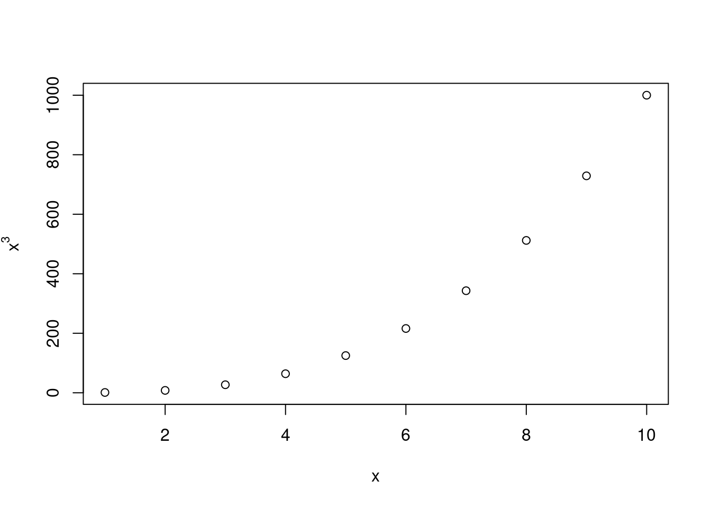

( exp(-0.5) )/( 1 + exp(-0.5) )[1] 0.3775407Using a little bit of algebra, use (4.2) to achieve (4.3). In other words, the logistic function representation and logit representation for the logistic regression model are equivalent.
Answer:
Equations (4.2) and (4.3) are the following:
\[ (4.2) \quad p(X) = \frac {e^{\beta_0 + \beta_1 X}} {1 + e^{\beta_0 + \beta_1 X}}\qquad\qquad (4.3) \quad \frac {p(X)} {1 - p(X)} =e^{\beta_0 + \beta_1 X} \]
Derivations:
\[ \begin{align*} \frac {p(X)} {1 - p(X)} &= \frac {\frac {e^{\beta_0 + \beta_1 X}} {1 + e^{\beta_0 + \beta_1 X}}}{1 - \frac {e^{\beta_0 + \beta_1 X}} {1 + e^{\beta_0 + \beta_1 X}}}\\[2ex] &= \frac {\frac {e^{\beta_0 + \beta_1 X}} {1 + e^{\beta_0 + \beta_1 X}}}{\frac {1 + e^{\beta_0 + \beta_1 X}} {1 + e^{\beta_0 + \beta_1 X}} - \frac {e^{\beta_0 + \beta_1 X}} {1 + e^{\beta_0 + \beta_1 X}}}\\[2ex] &= \frac {\frac {e^{\beta_0 + \beta_1 X}} {1 + e^{\beta_0 + \beta_1 X}}}{\frac {1} {1 + e^{\beta_0 + \beta_1 X}}} = e^{\beta_0 + \beta_1 X} \end{align*} \]
Suppose we collect data for a group of students in a statistics class with variables \(X_1=\)hours studied, \(X_2 =\) undergrad GPA (GPA: Grade Point Average), and \(Y =\) receive an A. We fit a logistic regression and produce estimated coefficients:
\[\hat{\beta}_0 = -6, \quad \hat{\beta}_1 = 0.05, \quad \hat{\beta}_2 = 1.\]
6 a) Estimate the probability that a student who studies for \(40\) h and has an undergrad GPA of \(3.5\) gets an A in the class.
Answer:
Remember from the previous exercise that:
\[ p(X) = \frac {\exp(\beta_0 + \beta_1 X_1 + \beta_2 X_2)} {1 + \exp(\beta_0 + \beta_1 X_1 + \beta_2 X_2)} \\ \]
Thus, the probability of \(Y=1\) given \(X=[x_1,x_2]\) with \(x_1 =40\) (hours) and \(x_2=3.5\) (GPA) yields:
\[ p(X) = \frac {\exp(-6 + 0.05\cdot 40 + 3.5)} {1 + \exp(-6 + 0.05\cdot 40 + 3.5)} = \frac {\exp(-0.5)} {1 + \exp(-0.5)} = 37.75\% \]
Calculations in R:
( exp(-0.5) )/( 1 + exp(-0.5) )[1] 0.37754076 b) How many hours would the student in part (a) need to study to have a \(50\%\) chance of getting an A in the class?
Answer:
Finding \(x_1\), where \(X = [x_1, 3.5]\), such that \(p(X) = 0.5\) yields:
\[ \begin{align*} 0.50 &= \frac {\exp(-6 + 0.05 x_1 + 3.5)} {1 + \exp(-6 + 0.05 x_1 + 3.5)} \\ \Leftrightarrow 0.50 (1 + \exp(-2.5 + 0.05\,x_1)) &= \exp(-2.5 + 0.05\,x_1)\\ \Leftrightarrow 0.50 + 0.50 \exp(-2.5 + 0.05\,x_1)) &= \exp(-2.5 + 0.05\,x_1)\\ \Leftrightarrow 0.50 &= 0.50 \exp(-2.5 + 0.05\,x_1)\\ \Leftrightarrow \log(1) &= -2.5 + 0.05\,x_1 \\ \Leftrightarrow x_1 &= 2.5 / 0.05 = 50 \end{align*} \]
Thus, on average, a student with an undergrad GPA of \(3.5\) needs to study \(50\) hours to have a \(50\%\) chance of getting an A.
This question should be answered using the Weekly data set, which is part of the ISLR2 package. This data is similar in nature to the Smarket data from this chapter’s lab, except that it contains \(1,089\) weekly returns for \(21\) years, from the beginning of \(1990\) to the end of \(2010\).
13 a) Produce some numerical and graphical summaries of the Weekly data. Do there appear to be any patterns?
Answer:
# You may need to install first the following R-packages:
# install.packages("ISLR2")
# install.packages("MASS")
# install.packages("class")
# install.packages("e1071") # naiveBayes()
# Load the packages you need
library("ISLR2")
# Eliminates the need of referring to a variable
# like 'Weekly$Year', and thus allows direct use of 'Year'
attach(Weekly)
# Use summary function to produce a numerical summary for each variable
summary(Weekly) Year Lag1 Lag2 Lag3
Min. :1990 Min. :-18.1950 Min. :-18.1950 Min. :-18.1950
1st Qu.:1995 1st Qu.: -1.1540 1st Qu.: -1.1540 1st Qu.: -1.1580
Median :2000 Median : 0.2410 Median : 0.2410 Median : 0.2410
Mean :2000 Mean : 0.1506 Mean : 0.1511 Mean : 0.1472
3rd Qu.:2005 3rd Qu.: 1.4050 3rd Qu.: 1.4090 3rd Qu.: 1.4090
Max. :2010 Max. : 12.0260 Max. : 12.0260 Max. : 12.0260
Lag4 Lag5 Volume Today
Min. :-18.1950 Min. :-18.1950 Min. :0.08747 Min. :-18.1950
1st Qu.: -1.1580 1st Qu.: -1.1660 1st Qu.:0.33202 1st Qu.: -1.1540
Median : 0.2380 Median : 0.2340 Median :1.00268 Median : 0.2410
Mean : 0.1458 Mean : 0.1399 Mean :1.57462 Mean : 0.1499
3rd Qu.: 1.4090 3rd Qu.: 1.4050 3rd Qu.:2.05373 3rd Qu.: 1.4050
Max. : 12.0260 Max. : 12.0260 Max. :9.32821 Max. : 12.0260
Direction
Down:484
Up :605
# Use cor function to produce a table of correlations for all variables
# (excluding the non-numerical variable 'Direction')
round(cor(Weekly[,-9]), 2) Year Lag1 Lag2 Lag3 Lag4 Lag5 Volume Today
Year 1.00 -0.03 -0.03 -0.03 -0.03 -0.03 0.84 -0.03
Lag1 -0.03 1.00 -0.07 0.06 -0.07 -0.01 -0.06 -0.08
Lag2 -0.03 -0.07 1.00 -0.08 0.06 -0.07 -0.09 0.06
Lag3 -0.03 0.06 -0.08 1.00 -0.08 0.06 -0.07 -0.07
Lag4 -0.03 -0.07 0.06 -0.08 1.00 -0.08 -0.06 -0.01
Lag5 -0.03 -0.01 -0.07 0.06 -0.08 1.00 -0.06 0.01
Volume 0.84 -0.06 -0.09 -0.07 -0.06 -0.06 1.00 -0.03
Today -0.03 -0.08 0.06 -0.07 -0.01 0.01 -0.03 1.00# Use pairs function to produce pairwise scatter plots
pairs(Weekly)
Yes, it appears that Year and Volume have a strong positive, but non-linear relationship.
13 b) Use the full data set to perform a logistic regression with Direction as the response and the five Lag variables plus Volume as predictors. Use the summary() function to print the results. Do any of the predictors appear to be statistically significant? If so, which ones?
Answer:
# Estimate a generalized linear regression model where the third input family is a description of the error distribution
# and link function to be used in the model, supplied as the result of a call to a family function - here use binomial.
# Why binomial? Because our independent variable Direction takes two values.
glm_fit <- glm(Direction~Lag1+Lag2+Lag3+Lag4+Lag5+Volume,
data = Weekly,
family = binomial)
# Use summary function to print the results
summary(glm_fit)
Call:
glm(formula = Direction ~ Lag1 + Lag2 + Lag3 + Lag4 + Lag5 +
Volume, family = binomial, data = Weekly)
Deviance Residuals:
Min 1Q Median 3Q Max
-1.6949 -1.2565 0.9913 1.0849 1.4579
Coefficients:
Estimate Std. Error z value Pr(>|z|)
(Intercept) 0.26686 0.08593 3.106 0.0019 **
Lag1 -0.04127 0.02641 -1.563 0.1181
Lag2 0.05844 0.02686 2.175 0.0296 *
Lag3 -0.01606 0.02666 -0.602 0.5469
Lag4 -0.02779 0.02646 -1.050 0.2937
Lag5 -0.01447 0.02638 -0.549 0.5833
Volume -0.02274 0.03690 -0.616 0.5377
---
Signif. codes: 0 '***' 0.001 '**' 0.01 '*' 0.05 '.' 0.1 ' ' 1
(Dispersion parameter for binomial family taken to be 1)
Null deviance: 1496.2 on 1088 degrees of freedom
Residual deviance: 1486.4 on 1082 degrees of freedom
AIC: 1500.4
Number of Fisher Scoring iterations: 4Conclusion: The predictor Lag2 appears to have some statistical significance with a \(p\)-value smaller than \(3\%\). (Ignoring issues due to multiple testing.)
13 c) Compute the confusion matrix and overall fraction of correct predictions. Explain what the confusion matrix is telling you about the types of mistakes made by logistic regression.
Answer:
# Use predict function on results of previous regression in 10 b)
glm_probs <- predict(glm_fit, type="response")
# Create a vector containing the string "Down"
glm_pred <- rep("Down", times = length(glm_probs))
# Substitute "Down" for "Up", whenever the estimated probability is above 0.5
glm_pred[glm_probs > 0.5] <- "Up"
# Construct a summary table with the predictions against
# the actual 'Direction'-values
table(glm_pred, Direction) Direction
glm_pred Down Up
Down 54 48
Up 430 557contrasts(Weekly$Direction) Up
Down 0
Up 1Counts of the classification errors are found at the off-diagonal entries of the confusion matrix
Counts of the correct classifications are found at the diagonal entries of the confusion matrix
Possible Conclusions:
Percentage of correct predictions (TP+TN)/n: \((54+557)/(54+557+48+430) = 56.1\%\)
Percentage of false predictions (FP+FN)/n: \((48+430)/(54+557+48+430) = 43.9\%\)
During weeks when the market goes Up, the logistic regression is right about (True Pos. Rate TP/P) \(557/(557+48) = 92.1\%\) of the time.
During weeks when the market goes Down, the logistic regression is right about (True Neg. Rate TN/N) \(54/(430+54) = 11.2\%\) of the time.
Caution: All these answers are with respect to the training errors - not the test errors.
13 d) Now fit the logistic regression model using a training data period from \(1990\) to \(2008\), with Lag2 as the only predictor. Compute the confusion matrix and the overall fraction of correct predictions for the held out data (that is, the data from \(2009\) and \(2010\)).
Answer:
# generate condition for our training data
train = (Year < 2009)
# create data frame for the Weekly data from 2009 and 2010
# (usage of ! to define the "opposite")
Weekly_0910 <- Weekly[!train,]
# run regression on the training data subset
glm_fit <- glm(Direction ~ Lag2,
data = Weekly,
family = binomial,
subset = train)
# create data frame
glm_probs <- predict(glm_fit, Weekly_0910, type="response")
# fill with our predictions
glm_pred <- rep("Down", length(glm_probs))
glm_pred[glm_probs > 0.5] <- "Up"
# construct confusion table using only the test data
Direction_0910 <- Direction[!train]
table(glm_pred, Direction_0910) Direction_0910
glm_pred Down Up
Down 9 5
Up 34 56# compute the overall rate of correct predictions
# in the test set
mean(glm_pred == Direction_0910)[1] 0.62513 e) Repeat (d) using LDA.
Answer:
#call the packages you need
suppressPackageStartupMessages(library("MASS"))
# same approach as before but now using LDA method
lda_fit <- lda(Direction ~ Lag2, data=Weekly, subset=train)
lda_pred <- predict(lda_fit, Weekly_0910)
# confusion table using only the test data
table(lda_pred$class, Direction_0910) Direction_0910
Down Up
Down 9 5
Up 34 56# compute the overall rate of correct predictions
# in the test set
mean(lda_pred$class == Direction_0910)[1] 0.62513 f) Repeat (d) using QDA.
Answer:
# same approach as before but now using QDA method
qda_fit <- qda(Direction~Lag2, data=Weekly, subset=train)
qda_class <- predict(qda_fit, Weekly_0910)$class
# confusion table using only the test data
table(qda_class, Direction_0910) Direction_0910
qda_class Down Up
Down 0 0
Up 43 61# compute the overall rate of correct predictions
# in the test set
mean(qda_class == Direction_0910)[1] 0.586538513 g) Repeat (d) using KNN with \(K = 1.\)
Answer:
# call the package you need
library("class")
# same approach as before but now using KNN method with K=1
train_X <- as.matrix(Lag2[train])
test_X <- as.matrix(Lag2[!train])
train_Direction <- Direction[train]
# Note: If several observations are tied as nearest neighbors,
# then R will randomly break the tie.
# Setting a common seed guarantees that we get the same results
set.seed(1)
# Caution: KNN prediction uses a different function
knn_pred <- knn(train_X, test_X, train_Direction, k=1)
# confusion table using only the test data
table(knn_pred, Direction_0910) Direction_0910
knn_pred Down Up
Down 21 30
Up 22 31# compute the overall rate of correct predictions
# in the test set
mean(knn_pred == Direction_0910)[1] 0.513 h) Repeat (d) using naive Bayes.
Answer:
library("e1071")
nb_fit <- naiveBayes(Direction ~ Lag2,
data = Weekly,
subset = train)
nb_pred <- predict(nb_fit, Weekly_0910)
# confusion table using only the test data
table(nb_pred, Direction_0910) Direction_0910
nb_pred Down Up
Down 0 0
Up 43 61# compute the overall rate of correct predictions
# in the test set
mean(nb_pred == Direction_0910)[1] 0.586538513 i) Which of these methods appears to provide the best results on this data?
Answer:
Logistic regression and LDA have the largest rates of (overall) correct predictions on the held out test set.
13 j) Experiment with different combinations of predictors, including possible transformations and interactions, for each of the methods. Report the variables, method, and associated confusion matrix that appears to provide the best results on the held out data. Note that you should also experiment with values for \(K\) in the KNN classifier.
Answer:
# Logistic regression with Lag2:Lag1
glm_fit <- glm(Direction~Lag2:Lag1, data=Weekly, family=binomial, subset=train)
glm_probs <- predict(glm_fit, Weekly_0910, type="response")
glm_pred <- rep("Down", length(glm_probs))
glm_pred[glm_probs>.5] <- "Up"
Direction_0910 <- Direction[!train]
table(glm_pred, Direction_0910) Direction_0910
glm_pred Down Up
Down 1 1
Up 42 60mean(glm_pred == Direction_0910)[1] 0.5865385# LDA with Lag2 interaction with Lag1
lda_fit <- lda(Direction ~ Lag2:Lag1, data=Weekly, subset=train)
lda_pred <- predict(lda_fit, Weekly_0910)
mean(lda_pred$class == Direction_0910)[1] 0.5769231# QDA with sqrt(abs(Lag2))
qda_fit <- qda(Direction~Lag2+sqrt(abs(Lag2)), data=Weekly, subset=train)
qda_class <- predict(qda_fit, Weekly_0910)$class
table(qda_class, Direction_0910) Direction_0910
qda_class Down Up
Down 12 13
Up 31 48mean(qda_class == Direction_0910)[1] 0.5769231# KNN k =10, as before KNN uses a different command
set.seed(1)
knn_pred <- knn(train_X, test_X, train_Direction, k=10)
table(knn_pred, Direction_0910) Direction_0910
knn_pred Down Up
Down 17 21
Up 26 40mean(knn_pred == Direction_0910)[1] 0.5480769# KNN k = 100
set.seed(1)
knn_pred <- knn(train_X, test_X, train_Direction, k=100)
table(knn_pred, Direction_0910) Direction_0910
knn_pred Down Up
Down 10 11
Up 33 50mean(knn_pred == Direction_0910)[1] 0.5769231Conclusion: Out of these experiments, the original LDA and logistic regression have better performances in terms of overall correct prediction rates on the held out test set.
This problem involves writing functions.
15 a) Write a function, Power(), that prints out the result of raising 2 to the 3rd power. In other words, your function should compute \(2^3\) and print out the results. Hint: Recall that x^a raises x to the power a. Use the print() function to output the result.
Answer:
Power <- function() {
2^3
}
Power()[1] 815 b) Create a new function, Power2(), that allows you to pass any two numbers, x and a, and prints out the value of x^a. You can do this by beginning your function with the line Power2 <- function (x,a){. You should be able to call your function by entering, for instance, Power2 (3,8) on the command line. This should output the value of \(38\), namely, \(6,561\).
Answer:
Power2 <- function(x, a) {
x^a
}
Power2(3, 8)[1] 656115 c) Using the Power2() function that you just wrote, compute \(10^3\), \(8^{17}\), and \(131^3\).
Answer:
Power2(10, 3)[1] 1000Power2(8, 17)[1] 2.2518e+15Power2(131, 3)[1] 224809115 d) Now create a new function, Power3(), that actually returns the result x^a as an R object, rather than simply printing it to the screen. That is, if you store the value x^a in an object called result within your function, then you can simply return() this result, using the following line: return(result). This should be the last line in your function, before the } symbol.
Answer:
Power3 <- function(x, a) {
result <- x^a
return(result)
}15 e) Now using the Power3() function, create a plot of f(x) = \(x^2\). The x-axis should display a range of integers from 1 to 10, and the y-axis should display \(x^2\). Label the axes appropriately, and use an appropriate title for the figure. Consider displaying either the x-axis, the y-axis, or both on the log-scale. You can do this by using log="x", log="y", or log="xy" as arguments to the plot() function.
Answer:
x <- 1:10
par(mfrow=c(1,3))# graph parameters (three plots in one column)
plot(x = x, y = Power3(x, 2), type="b", log="x",
ylab = expression(x^2),
xlab = expression(x),
main = "log-transformed\nx-axis")
plot(x = x, y = Power3(x, 2), type="b", log="y",
ylab = expression(x^2),
xlab = expression(x),
main = "log-transformed\ny-axis")
plot(x = x, y = Power3(x, 2), type="b", log="xy",
ylab = expression(x^2),
xlab = expression(x),
main = "log-transformed\nx and y-axis")
par(mfrow=c(1,1))# reset graphic parameters15 f) Create a function, PlotPower(), that allows you to create a plot of x against x^a for a fixed a and for a range of values of x. For instance, if you call PlotPower (1:10 ,3) then a plot should be created with an x-axis taking on values \(1, 2, \dots , 10\), and a y-axis taking on values \(1^3\), \(2^3\), . . . , \(10^3\).
Answer:
PlotPower = function(x, a) {
ylab_text <- bquote('x'^.(a)) # write y-axis label
plot(x = x, y = Power3(x, a), type = "b",
ylab = ylab_text)
}
PlotPower(1:10, 3)
Using the Boston data set, fit classification models in order to predict whether a given suburb has a crime rate above or below the median. Explore logistic regression, LDA, and KNN models using various subsets of the predictors. Describe your findings.
Answer:
attach(Boston)
crime01 <- rep(0, length(crim))
crime01[crim > median(crim)] <- 1
Boston <- data.frame(Boston, crime01)
train <- 1:(dim(Boston)[1]/2)
test <- (dim(Boston)[1]/2+1):dim(Boston)[1]
Boston.train <- Boston[train,]
Boston.test <- Boston[test,]
crime01.test <- crime01[test]# logistic regression of crime01 on all predictors
# except 'crime01' and 'crim'
glm_fit <- glm(crime01 ~ . -crime01 - crim,
data = Boston,
family = binomial,
subset = train)Warning: glm.fit: fitted probabilities numerically 0 or 1 occurredglm_probs <- predict(glm_fit, Boston.test, type="response")
glm_pred <- rep(0, length(glm_probs))
glm_pred[glm_probs > 0.5] <- 1
mean(glm_pred != crime01.test)[1] 0.1818182Conclusion: This logistic regression has a test error rate of \(18.2\%\).
glm_fit <- glm(crime01 ~ . -crime01 -crim -chas -tax,
data=Boston, family=binomial, subset=train)Warning: glm.fit: fitted probabilities numerically 0 or 1 occurredglm_probs <- predict(glm_fit, Boston.test, type="response")
##
glm_pred <- rep(0, length(glm_probs))
glm_pred[glm_probs > 0.5] <- 1
mean(glm_pred != crime01.test)[1] 0.1857708Conclusion: This logistic regression has a test error rate of \(18.6\%\).
# LDA
lda_fit <- lda(crime01~.-crime01-crim, data=Boston, subset=train)
lda_pred <- predict(lda_fit, Boston.test)
mean(lda_pred$class != crime01.test)[1] 0.1343874Conclusion: This LDA has a test error rate of \(13.4\%\).
lda_fit <- lda(crime01~.-crime01-crim-chas-tax, data=Boston, subset=train)
lda_pred <- predict(lda_fit, Boston.test)
mean(lda_pred$class != crime01.test)[1] 0.1225296Conclusion: This LDA has a test error rate of \(12.3\%\).
lda_fit <- lda(crime01~.-crime01-crim-chas-tax-lstat-indus-age,
data=Boston, subset=train)
lda_pred <- predict(lda_fit, Boston.test)
mean(lda_pred$class != crime01.test)[1] 0.1185771Conclusion: This LDA has a test error rate of \(11.9\%\).
# KNN
library(class)
train_X <- cbind(zn, indus, chas, nox, rm, age, dis, rad, tax, ptratio, black,
lstat, medv)[train,]
test_X <- cbind(zn, indus, chas, nox, rm, age, dis, rad, tax, ptratio, black,
lstat, medv)[test,]
train.crime01 <- crime01[train]
set.seed(1)
# KNN(k=1)
knn_pred <- knn(train_X, test_X, train.crime01, k=1)
##
mean(knn_pred != crime01.test)[1] 0.458498Conclusion: This KNN prediction has a test error rate of \(45.8\%\).
# KNN(k=10)
set.seed(1)
knn_pred <- knn(train_X, test_X, train.crime01, k=10)
mean(knn_pred != crime01.test)[1] 0.1106719Conclusion: This KNN prediction has a test error rate of \(11.1\%\).
# KNN(k=100)
set.seed(1)
knn_pred = knn(train_X, test_X, train.crime01, k=100)
mean(knn_pred != crime01.test)[1] 0.486166Conclusion: This KNN prediction has a test error rate of \(48.6\%\).
Overall conclusion: The best models are the ones with the smaller test error rates. In our case, this means that the smallest (fewest predictors) LDA-model and the KNN prediction with K=10 are the best prediction models.